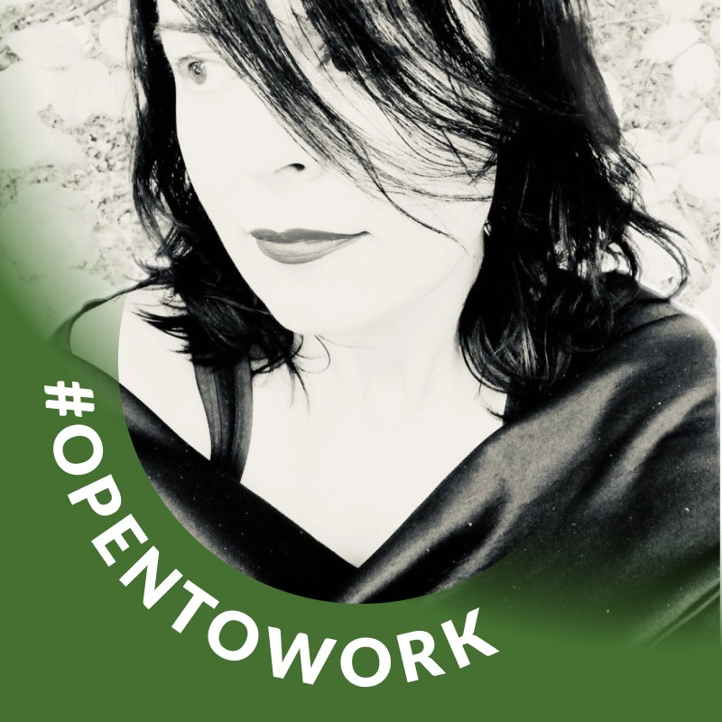
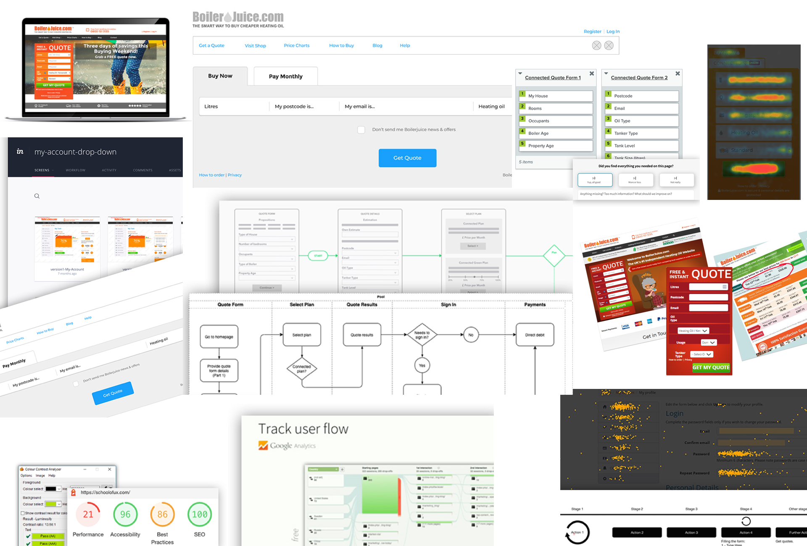
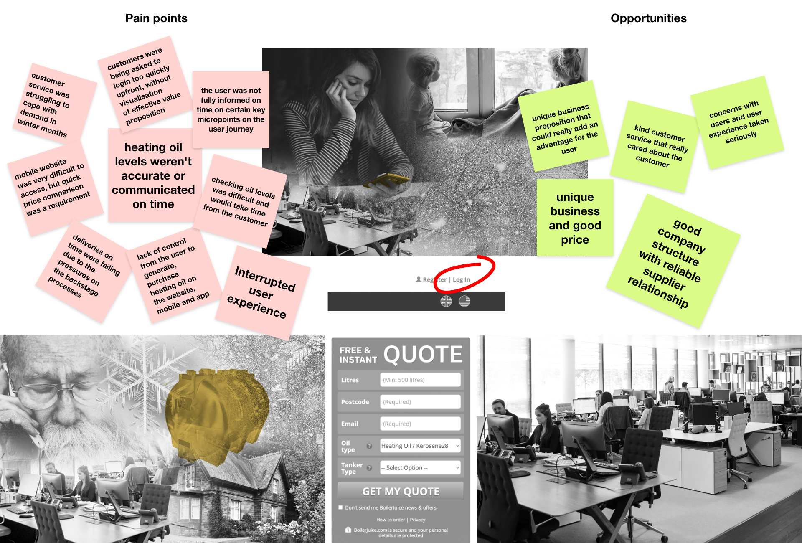
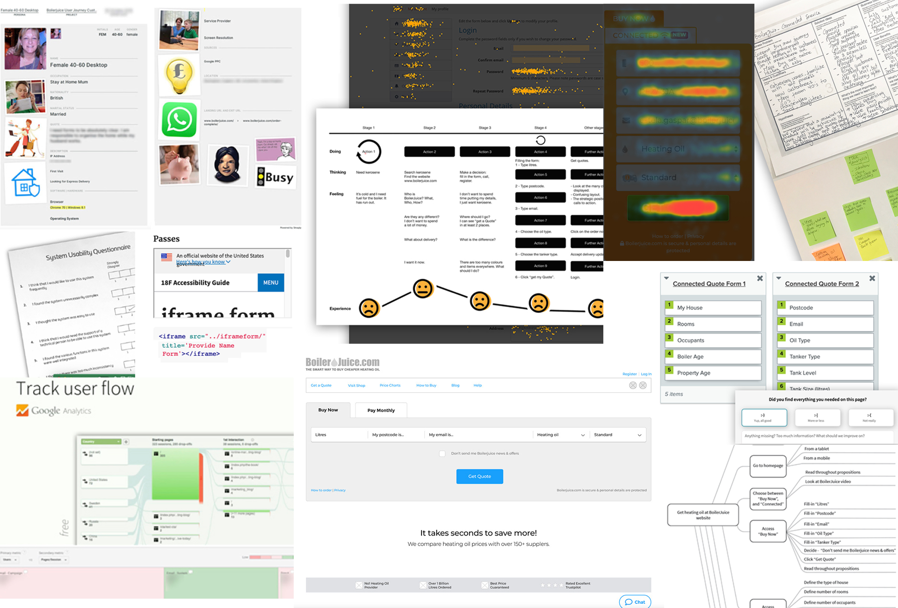

Discover
Understand customer needs, behaviours and pain points.

BoilerJuice is a UK heating oil price comparison service. I helped shape a more confident ordering experience by connecting user research, service design and UI.
Explore the impact
For households outside the mains gas network, heating oil is essential. Ordering it can become stressful when supplies are running low and delivery expectations are unclear.
Customers need to anticipate their needs, compare prices and understand when their delivery will arrive. For people in remote locations, uncertainty can be particularly difficult during colder months.
The existing journey relied on phone orders and a basic online form. As demand grew, there was an opportunity to make ordering more efficient and provide clearer information throughout the service.
Go beyond improving the interface. Make the whole ordering experience easier to understand, navigate and trust.

Over 18 months, I held approximately 80% UX ownership within a cross-functional team of around 300 people. I worked with product owners, engineers, customer service specialists, heating oil partners and marketing professionals.
My contribution covered new user journeys, legacy page redesigns and content for the Connected Service across the public website and mobile app.
I inherited parts of the original app design from another designer. Some elements evolved from that foundation, while the current structure and layouts largely reflect my work.
Understand customer needs, behaviours and pain points.
Translate insights into clearer journeys and interfaces.
Collaborate with teams to refine and implement solutions.
I used clarity, reassurance and ease of use as practical principles for turning customer needs into design decisions. These were my working principles, rather than formal brand guidelines.
I redesigned the quote form to make obtaining a quote clearer and faster, and improved access to important information through enhanced search.
FORMS · HIERARCHY · INFORMATION ACCESSI redesigned key checkout pages and improved how delivery expectations were presented, making the purchasing journey feel more transparent.
CHECKOUT · DELIVERY · NEXT STEPSI reviewed the end-to-end purchasing journey, including mobile use, improving flows and layouts while supporting subscriptions and repeat orders.
USER FLOWS · RESPONSIVE UI · REPEAT USEI worked with the Product Manager on discovery, defining problem statements and identifying opportunities through research, customer feedback and iterative testing.
User interviews, ongoing feedback and UX diaries helped explore customer needs and behaviours.
Google Analytics, behavioural analysis and System Usability Scale research informed the investigation.
Card sorting, information architecture mapping and user flows helped organise the experience.
Ecosystem maps, service blueprints, lean canvases and accessibility audits informed design priorities.

I mapped user flows in Draw.io and Sketch, exploring successful and unsuccessful paths to identify potential issues before implementation. I developed low- to mid-fidelity wireframes using Axure, Sketch, Figma and Balsamiq to explore layouts and align stakeholders.
Clarified the quoting process, made required information easier to follow and supported ongoing customer needs through subscription options.
Redesigned key checkout pages to reduce friction, improve transparency and support a more mobile-friendly purchasing experience.
Improved search to help customers find important documents and relevant information with less effort.
I partnered with developers through design handover, documentation, regular check-ins and QA sessions. I also engaged stakeholders early, using research and testing to explain design decisions and balance customer needs with business goals in an agile environment.
The project contributed to a more straightforward and transparent ordering experience, with benefits for both customers and service operations.
Clearer information and delivery expectations helped customers better understand the ordering process.
Customers had a clearer route to completing orders with little or no support.
Customer service calls shifted towards follow-ups rather than winter emergencies.
Alerts and subscription options gave customers more ways to manage ongoing heating oil needs.
Earlier reordering and clearer service information supported the business during peak winter demand.
These outcomes reflect the qualitative impact described by the project. Quantitative measures were not available for this case study. Checkout completion, journey abandonment, support-call volume and subscription uptake would be useful measures for evaluating the scale of improvement.
This project reinforced the importance of treating UX and UI as part of the service experience, rather than as a layer of visual polish. The design needed to communicate clearly, reduce uncertainty and help customers complete an important household purchase with confidence.
By connecting research, service design and interface decisions, I helped shape an experience that addressed both customer needs and operational challenges.
Visit BoilerJuice